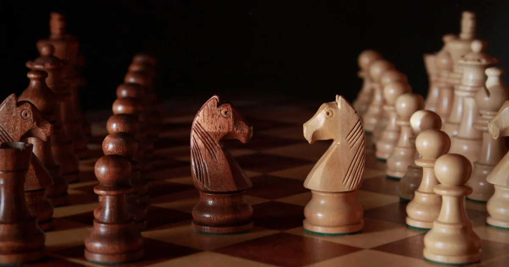

Au sommaire
Le titre mondial : 140 ans d'histoire en 2 minutes
Le titre de champion du monde d'échecs existe depuis 1886, quand Wilhelm Steinitz a battu Johannes Zukertort dans le tout premier match officiel. Depuis, seuls 18 joueurs ont porté cette couronne. Pour vous donner une idée de la rareté : il y a eu plus d'hommes sur la Lune que de champions du monde d'échecs entre 1886 et 1972.
Parmi eux, des noms que vous connaissez peut-être déjà : Bobby Fischer, Garry Kasparov, et bien sûr Magnus Carlsen, qui a dominé le jeu pendant dix ans avant de renoncer volontairement à défendre son titre en 2023 — non pas battu, mais lassé du format.
C'est ce retrait qui a ouvert une nouvelle ère : Ding Liren (Chine) a pris le titre en 2023, puis l'a perdu fin 2024 face à un adolescent indien qui a stupéfié la planète entière : Gukesh Dommaraju.
Gukesh, le champion : prodige déjà fragilisé ?
L'ascension la plus rapide de l'histoire
Né le 29 mai 2006 à Chennai, en Inde, Gukesh a grandi dans la ville d'Anand — Viswanathan Anand, quintuple champion du monde et idole de toute une génération indienne. Son parcours donne le vertige :
- À 12 ans : grand maître international, l'un des plus jeunes de l'histoire
- À 17 ans : vainqueur du Tournoi des Candidats 2024 à Toronto — le plus jeune vainqueur de tous les temps
- À 18 ans : champion du monde, en battant Ding Liren 7,5 à 6,5 à Singapour en décembre 2024
Ce jour-là, Gukesh a pulvérisé un record vieux de 39 ans : celui de Garry Kasparov, sacré à 22 ans en 1985. La dernière partie du match reste dans toutes les mémoires : dans une finale que tout le monde annonçait nulle, Ding Liren a commis une erreur fatale... et Gukesh a fondu en larmes devant l'échiquier. Un moment d'émotion rare, qui a fait le tour du monde.
Mais 2026 est une année difficile
Voilà où l'histoire devient passionnante : le champion du monde traverse une vraie crise de résultats. Jugez plutôt :
- Au classement Elo de juillet 2026, Gukesh pointe seulement à la 26e place mondiale (2717) — du jamais-vu pour un champion du monde en titre
- Au Norway Chess 2026, il a terminé dernier du tournoi, avec cinq défaites en cadence classique, dont une contre Carlsen
- Il s'est retiré des principaux tournois du Grand Chess Tour 2026, officiellement pour préparer son match
Est-ce le poids de la couronne ? La pression médiatique énorme en Inde ? Ou une préparation secrète où il cache volontairement ses armes avant le match ? Aux échecs comme au poker, on ne montre pas ses cartes avant la grande finale. 😏
Sindarov, le challenger qui a écrasé les Candidats
Si vous ne connaissez pas encore le nom de Javokhir Sindarov, retenez-le. Ce joueur ouzbek de 20 ans vient de réaliser l'une des plus grandes performances de l'histoire moderne des échecs.
Une démonstration historique à Chypre
Le Tournoi des Candidats, c'est la compétition qui désigne le challenger officiel du champion du monde : huit des meilleurs joueurs de la planète, quatorze rondes, une pression inhumaine. Au printemps 2026, à Chypre, Sindarov n'a pas gagné ce tournoi — il l'a survolé :
- 10 points sur 14 : six victoires, huit nulles, zéro défaite
- Le meilleur score de toute l'ère moderne des Candidats (depuis 2013)
- Tournoi gagné mathématiquement une ronde avant la fin, après une nulle tranquille contre Anish Giri
- Plus de 30 points Elo gagnés, propulsé 5e joueur mondial
Pour comparaison : ni Carlsen, ni Caruana, ni Nepomniachtchi n'ont jamais dominé un Candidats à ce point. Et comme Gukesh, Sindarov est un ancien enfant prodige : grand maître à 12 ans, formé dans la redoutable école ouzbèke qui a remporté l'Olympiade 2022.
Et pendant ce temps, côté féminin, l'Indienne Vaishali Rameshbabu (la sœur du prodige Praggnanandhaa) a remporté le Candidats féminin et défiera la championne du monde en titre. L'Inde est décidément partout.
Comment fonctionne un match de championnat du monde ?
Si vous débutez, voici tout ce qu'il faut savoir pour suivre le match sans être perdu :
- 14 parties en cadence classique (chaque joueur dispose de plusieurs heures de réflexion par partie)
- 1 point par victoire, 0,5 point par nulle — le premier à 7,5 points est champion du monde
- En cas d'égalité 7-7 : des départages en parties rapides, puis en blitz si nécessaire — l'équivalent des tirs au but au football
- Une partie par jour environ, avec des journées de repos — un match dure près de trois semaines
- Le lieu et les dates exactes du match Gukesh–Sindarov seront annoncés par la FIDE ; seule certitude à ce jour : ce sera fin 2026
Trois semaines pour quatorze parties, cela peut sembler lent. C'est tout l'inverse : chaque partie est un marathon mental où un seul coup imprécis peut décider du titre. Les joueurs perdent plusieurs kilos pendant un match de championnat du monde — véritablement.
Les clés du match (et mon pronostic honnête)
En tant que professeur, voici les trois questions qui décideront du match selon moi :
1. Le Gukesh de Singapour sera-t-il de retour ?
Le Gukesh de 2024 était une machine à calculer d'une précision terrifiante, avec un sang-froid d'assassin dans les moments critiques. Celui de 2026 doute, perd des parties en cadence classique — chose rarissime à ce niveau. Six mois pour se reconstruire, c'est à la fois long et très court.
2. Sindarov saura-t-il gérer la nouveauté ?
Écraser un tournoi est une chose. Jouer un match de trois semaines contre un seul adversaire, avec toute une équipe d'analystes qui dissèque chacune de vos ouvertures, en est une autre. Aucun match ne ressemble à un tournoi — demandez à tous les challengers battus avant lui.
3. La préparation d'ouvertures
À ce niveau, les 15 premiers coups se jouent... avant le match, dans les laboratoires d'analyse. Chaque camp emploie des secondants (des grands maîtres à plein temps !) et des ordinateurs surpuissants pour préparer des surprises. Bonne nouvelle pour vous : les principes de base restent les mêmes que ceux que vous apprenez dans les ouvertures pour débutants — contrôler le centre, développer ses pièces, mettre son roi à l'abri.
Mon pronostic ? La logique sportive de 2026 désigne Sindarov favori — forme éclatante contre champion en crise. Mais je me méfie énormément d'un champion blessé qui a six mois pour préparer sa revanche sur le monde. Je dis Gukesh aux départages. Et je serai ravi de me tromper devant un beau match. 🍿
Ce match vous donne envie de vous y mettre ?
C'est exactement comme ça que beaucoup de mes élèves ont commencé : un match légendaire, une série, une envie soudaine. Je vous apprends les échecs depuis zéro, à domicile (Paris/Versailles) ou en visio — et le premier cours est offert.
Réserver mon cours offertComment suivre le match quand on débute
Pas besoin d'être classé 2700 pour vibrer devant un championnat du monde. Voici comment en profiter à votre niveau :
- Suivez les retransmissions commentées en français : les commentateurs expliquent les coups en direct, avec l'évaluation de l'ordinateur qui vous dit qui est mieux — même sans comprendre chaque coup, le suspense est très accessible
- Regardez les résumés du lendemain (15-20 minutes) si les parties complètes de 4-6 heures vous semblent longues — ce qu'elles sont, avouons-le
- Apprenez d'abord à lire les coups : la notation (e4, Cf3...) s'apprend en une heure et change tout — elle est expliquée dans notre guide complet des règles
- Rejouez UNE partie du match sur votre échiquier, tranquillement : c'est l'un des meilleurs exercices de progression qui existe, même en ne comprenant que la moitié des coups
Et si l'histoire des grands champions vous fascine, prolongez avec les portraits de Magnus Carlsen, de Maxime Vachier-Lagrave, le meilleur Français, ou de Judit Polgár, la meilleure joueuse de tous les temps.
Vous êtes à Paris ou Versailles ?
Je propose des cours d'échecs pour tous les niveaux — des règles du jeu jusqu'à la préparation de vos premiers tournois. Premier cours offert pour tester !
Discutons de votre projetArticle recommandé
Envie de comprendre ce que valent vraiment les 2717 Elo de Gukesh ou les 2700+ de Sindarov ?
Le Classement Elo aux Échecs : Comprendre Votre Niveau De 400 à 2882 : ce que signifient vraiment les chiffres Elo →
Article rédigé par Nicolas Musicki, professeur d'échecs à Paris et Versailles
Retour à l'accueil |
Me contacter